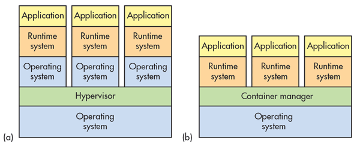

Virtualization & Containerization
-
_____
Virtualization is the act of creating a virtual version of something, including virtual computer hardware. It uses software to create an abstraction layer over computer hardware that allows the hardware elements of a single computer—processors, memory, storage and more—to be divided into multiple virtual computers, commonly called virtual machines (VMs).
-

_____
Containerization is the process of packing an application with all of its related configuration files, libraries and dependencies required for it to run in an efficient and bug-free way across different computing environments. Each container simulates a different software application. A common operating system is shared by multiple containers.
-

_____
Comparison of Virtualization (a) & Containerization (b)
Virtualization enables you to run multiple operating systems on the hardware of a single physical server, while containerization enables you to deploy multiple applications using the same operating system on a single virtual machine or server.
Virtual machines use a hypervisor, or virtual machine monitor. This is the software layer that enables multiple operating systems to run side-by-side on same physical server. The hypervisor manages the available resources (computing power, memory, storage, etc.), aligning a portion to each virtual machine as needed. Container systems provide operating system services from the underlying host and isolate the applications using virtual-memory hardware.
Virtual machines have a longer lifecycle than containers. They are best used for longer periods of time. Containers have a fast set up time and are best used for tasks that may only take a few hours.
Virtualization provides complete isolation from the host operating system and the other virtual machines, whereas, containerization typically provides lightweight isolation from the host and other containers, but doesn’t provide as strong a security boundary as a virtual machine.